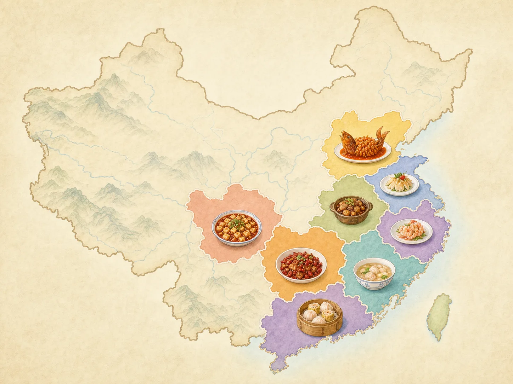
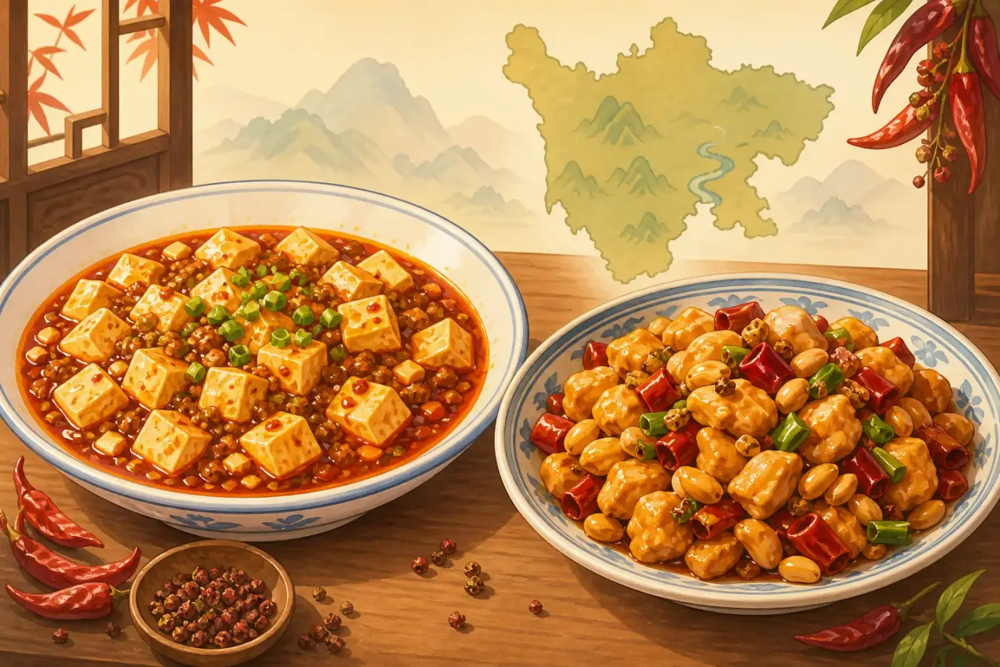
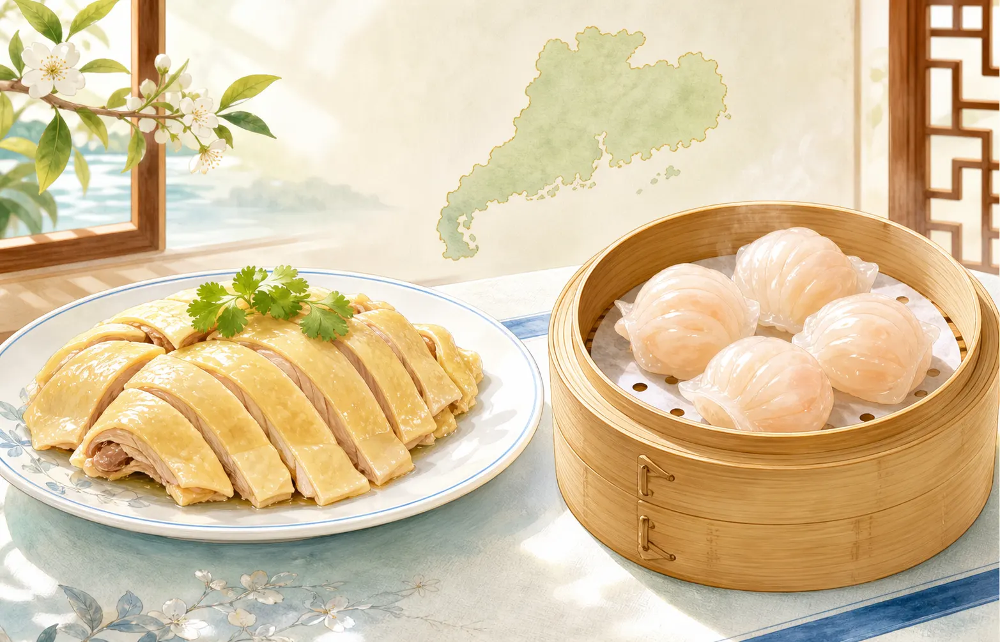
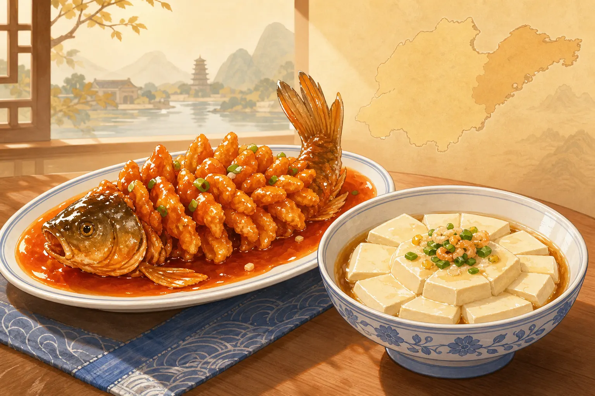
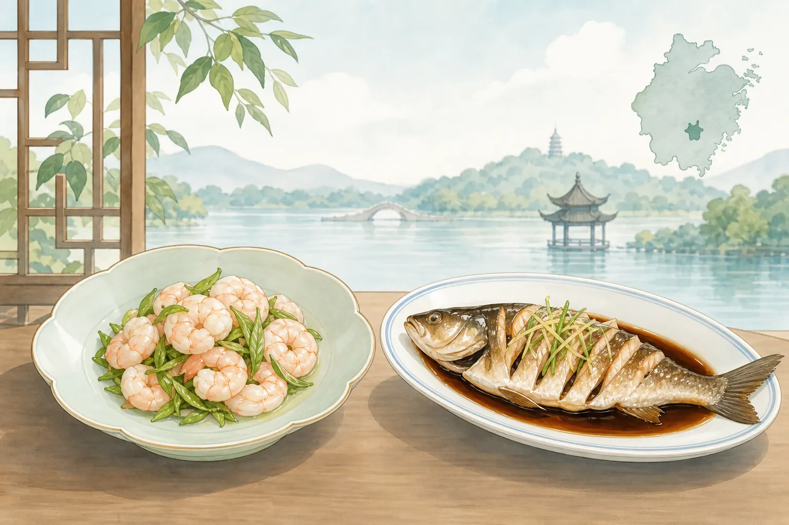

中国菜
Chinese Food Has Many Flavors
Page 1
中国菜不只有一种味道
Chinese Food Is Not Just One Taste

People often talk about China's “Eight Great Cuisines,” with different regions known for different flavors.
有些人一想到中国菜，就只想到几样外卖菜。
其实，中国很大，不同地方的人喜欢吃的东西也不一样。
人们常说中国有八大菜系：鲁、川、粤、苏、闽、浙、湘、徽。
有的地方爱辣，有的地方爱清淡，有的地方喜欢香香的汤，还有的地方会做出一点甜味。
今天，我们先从里面挑四种常常被提到的地方风味来认识。
Some people think Chinese food is only a few takeout dishes.
But China is very big, and people in different places like different foods.
People often group famous regional cooking into the Eight Great Cuisines: Shandong, Sichuan, Cantonese, Jiangsu, Fujian, Zhejiang, Hunan, and Anhui.
Some places love spicy flavors. Some like light, fresh food. Some enjoy rich soups, and some add a little sweetness.
Today, let's start by meeting four well-known examples.
Page 2
川菜
Sichuan Food

Sichuan food is often fragrant and spicy, with a gentle tingly feeling on your lips.
川菜来自四川。
很多川菜闻起来很香，吃起来会有辣椒的辣，也会有花椒带来的“麻”。
所以吃川菜的时候，你可能会觉得嘴巴热热的，也会觉得舌头有一点点发麻。
很多人认识川菜，都是从麻婆豆腐和宫保鸡丁开始的。
Sichuan food comes from Sichuan.
Many Sichuan dishes smell wonderful and taste spicy from chili peppers. They may also feel a little tingly because of Sichuan peppercorn.
So when you eat Sichuan food, your mouth may feel warm, and your lips may feel a little buzzy too.
Many people first meet Sichuan food through dishes like mapo tofu and kung pao chicken.
Page 3
粤菜
Cantonese Food

Cantonese food often looks simple, but it tastes fresh and gentle.
粤菜来自广东。
它很看重食材本来的味道，所以很多菜不会放太重的调味。
吃粤菜的时候，你常常会先尝到鸡肉、鱼肉或者蔬菜本来的鲜味。
白切鸡和点心，都是很多人很熟悉的粤菜。
Cantonese food comes from Guangdong.
It cares a lot about the natural taste of the ingredients, so the seasoning is often light.
When you eat Cantonese food, you may notice the fresh taste of the chicken, fish, or vegetables first.
White cut chicken and dim sum are two foods many people know well.
Page 4
鲁菜
Shandong Food

Shandong food is a famous northern style that often uses fish, seafood, and rich broth.
鲁菜来自山东，是很有名的北方菜。
它常常会用鱼、海鲜和汤来做出很香的味道。
有些鲁菜吃起来咸香，有些吃起来鲜鲜的，很适合喜欢浓一点味道的人。
糖醋鲤鱼和豆腐菜，都是常常会被提到的代表菜。
Shandong food comes from Shandong and is a famous northern style.
It often uses fish, seafood, and broth to build deep, savory flavors.
Some Shandong dishes taste salty and fragrant. Others taste especially fresh.
Sweet-and-sour carp and tofu dishes are often named as examples.
Page 5
浙菜
Zhejiang Food

Zhejiang food often tastes light and fresh, so the natural flavor comes first.
浙菜来自浙江。
很多浙菜看起来很精致，味道清爽，不会太重。
吃的时候，你常常会先感觉到食物本来的鲜味，然后才慢慢吃到调味。
龙井虾仁和西湖醋鱼，都是很有名的浙菜。
Zhejiang food comes from Zhejiang.
Many Zhejiang dishes look elegant and taste fresh and light.
When you take a bite, you often notice the food's own flavor before the seasoning steps forward.
Dragon Well shrimp and West Lake vinegar fish are two famous examples.
中国菜有很多味道
Chinese Food Has Many Flavors
现在你已经知道了，中国菜不是只有一种样子，也不是只有一种味道。
下次看到中国菜时，你可以想一想：这是辣辣的，还是清清爽爽的？这是北方味道，还是南方味道？
这只是开始。中国还有很多很多好吃的菜，等着你慢慢认识。
Now you know that Chinese food is not only one style or one flavor.
The next time you see Chinese food, you can wonder: is it spicy, or light and fresh? Does it come from the north, or from the south?
This is only the beginning. China has many more delicious dishes waiting for you to discover.